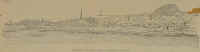

|
What was the island of Montréal like in Jacques's day? After the Great Peace of 1701, we can look at how Montréal developed. Until then, development had been limited to Lachine in 1669, Pointe-aux-Trembles in 1678 and Sainte-Anne-de-Bellevue in 1685: defensive outposts, riverside settlements and trading posts.
In the following years settlers cleared land and settled on the côte Notre-Dame-de-la-Vertu. The côte Notre-Dame-de-Liesse was also opened, at the edge of Lachine, and the area between Côte-des-Neiges and the Rivière des Prairies slowly filled up. So when Jacques Charette was born in 1777, much of the island of Montréal was well on its way to being cleared. Since the Conquest of 1760, British merchants had dominated and controlled almost all of Montréal's economy. There were, however, business partnerships between the English and the French, especially in the fur trade. The French knew the land well and had very good relations with those then called "sauvages" (Indigenous peoples). In return, they could get access to credit from the British banks, which hardly trusted French Canadians. In 1770 James McGill, who had arrived in the country three years earlier, went into the fur trade himself with French partners. He married a Frenchwoman, Charlotte Des Rivières. Mixed marriages were common, which gave the political and religious authorities a hard time. Many mixed couples suffered discrimination.  At the time, however, the French could still speak their language and practise their religion. Home to French, English, Scots, Irish and Jews, the city was already cosmopolitan, but also very unequal. British officials and merchants, who made up 10% of the population, owned 50% of the private land. In 1786 the wealthy John Molson opened his brewery. The well-to-do built themselves houses on the slopes of Mount Royal. McGill, in fact, had a residence at the foot of the mountain, on the very spot where the university that bears his name stands today. Hygiene left a lot to be desired in Montréal. At the time people thought water was not very good for the skin. They bathed once a week in summer and every two weeks in winter.
Right in the heart of the city there were vegetable patches, gardens and cultivated fields. Where the Bonaventure expressway runs today, windmills stood.
|
 In 1702 three
Décary brothers, Paul, Michel and Louis, began
clearing the côte Saint-Laurent. The Sulpicians,
seigneurs of Montréal, granted nineteen concessions on the
côte Saint-Laurent, which formed the core of the future village.
In 1702 three
Décary brothers, Paul, Michel and Louis, began
clearing the côte Saint-Laurent. The Sulpicians,
seigneurs of Montréal, granted nineteen concessions on the
côte Saint-Laurent, which formed the core of the future village. 
 Notre-Dame
church was then the largest building in the city. Today the
Saint-Sulpice seminary, on rue Notre-Dame, bears witness to the architecture of
the French era. Its bell tower is one of the oldest in America. From 1767
to 1800, Montréal's population doubled, reaching 9,000 inhabitants. Infrastructure
was poor and city life was at the mercy of the weather.
Notre-Dame
church was then the largest building in the city. Today the
Saint-Sulpice seminary, on rue Notre-Dame, bears witness to the architecture of
the French era. Its bell tower is one of the oldest in America. From 1767
to 1800, Montréal's population doubled, reaching 9,000 inhabitants. Infrastructure
was poor and city life was at the mercy of the weather.